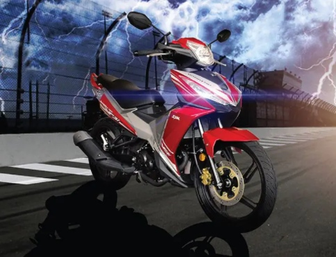
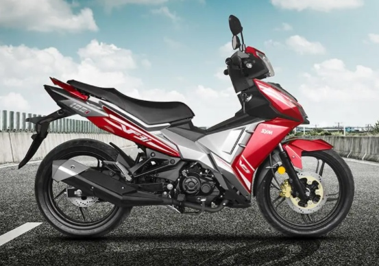

Bên cạnh Honda RS150R (Tên gọi của Honda Winner X ở Việt Nam), Yamaha Y15ZR (Tên gọi của Yamaha Exciter 150 ở Việt Nam) thì người tiêu dùng tại thị trường Malaysia có thể tham khảo thêm mẫu xe côn tay SYM VF3i 185 mới với sức mạnh lấn át mọi đối thủ cùng mức giá phải chăng.
Một trong những đặc điểm nổi bật của SYM VF3i 185 là ngoại hình thể thao và hầm hố cùng với đồ họa táo bạo, cá tính. Hãng thiết kế hệ thống đèn LED chạy ban ngày tiết kiệm điện hiệu quả, đèn báo rẽ LED, đèn hậu LED nổi bật.

Nhà sản xuất đã trang bị cho xe: Công tắc đổ đèo, đèn phản chiếu bên, cảnh báo kiểm tra động cơ, chế độ đi đường và khóa cửa chớp về mặt an toàn; bảng điều khiển kỹ thuật số hiển thị các thông tin chi tiết như tốc độ, mức nhiên liệu, tốc độ, quãng đường đã đi,…
Cung cấp sức mạnh cho đối thủ Honda Winner X là khối động cơ 1 xi lanh EFI 183 cc làm mát bằng chất lỏng cung cấp công suất 17,7 mã lực, tùy chọn hộp số truyền 6 cấp. Kích thước lốp trước là 90/80 R17 và kích thước lốp sau là 120/70 R17.
Xe sử dụng hệ thống treo trước dạng ống lồng, hệ thống treo hành trình 32 mm (Phía sau), giảm xóc đơn phía sau, hệ thống treo hành trình 80 mm (Phía trước). Phanh trước và phanh sau dạng đĩa, vật liệu khung thân bằng thép, ghế thẳng kép mang lại tư thế ngồi thoải mái cho người dùng. Sym VF3i 185 có 2 biến thể gồm: Phiên bản tiêu chuẩn và Phiên bản đặc biệt.
Tại thị trường Malaysia, mẫu xe côn tay này có giá quy đổi sang tiền Việt Nam từ 43.500.000 đồng đến 45.100.000 đồng, cạnh tranh trực tiếp với Honda RS150R (Tên gọi của Honda Winner X ở Việt Nam), Yamaha Y15ZR (Tên gọi của Yamaha Exciter 150 ở Việt Nam).